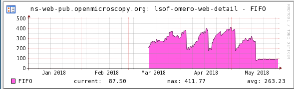
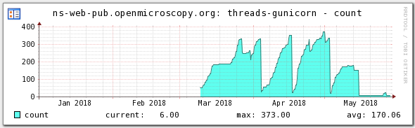
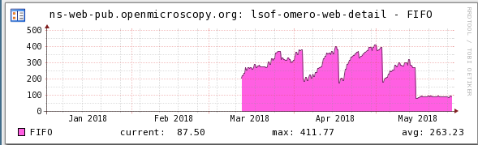
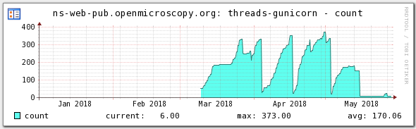

OMERO Ops
OME Users meeting 2018
What, Why, How?
- What is happening with my systems?
- Why has it crashed?
- How can I avoid it in future?
The solution: Monitoring
We've used two systems in the OME
Check_MK


PixelData restart... (screenshot of code)
Check_MK - ns-web-pub, 2018
 

Fix: openmicroscopy/pull/5699


Fix: openmicroscopy/pull/5699
Why Prometheus and Grafana instead of Check_MK?
- Automatic deployment
- Horizontal scaling
- It looks nice!